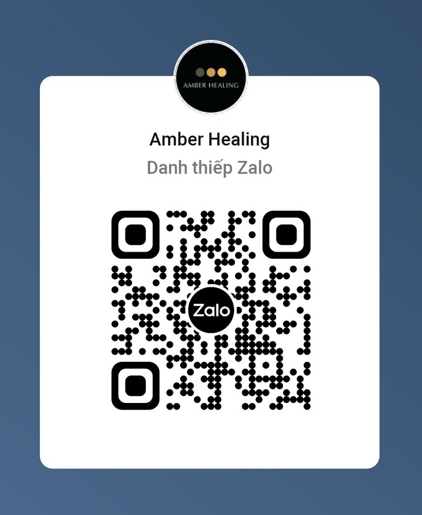

Training
Hiểu điều đang diễn ra
Kiến thức về cảm xúc, não bộ, hệ thần kinh, niềm tin và năng lượng được chuyển thành những bản đồ dễ hiểu, giúp bạn gọi tên trải nghiệm của chính mình.
![Amber Healing]() Đăng ký tư vấn
Đăng ký tư vấnAMBER HEALING · INNER SHIFT
Có những điều bạn đã hiểu rất rõ bằng lý trí, nhưng khi một tình huống quen thuộc xảy ra, cảm xúc vẫn đến quá nhanh và mọi chuyện lại lặp lại. Amber Healing giúp bạn nhìn thấy cơ chế đang vận hành bên trong, tạo ra khoảng dừng và thực hành một lựa chọn mới — ngay trong đời sống thật của mình.
“Mọi chuyển hóa bền vững đều bắt đầu từ bên trong.”
AMBER HEALING01 — ĐỊNH VỊ THƯƠNG HIỆU
Nhiều người tìm đến sự thay đổi sau một thời gian dài cố kiểm soát cảm xúc, suy nghĩ tích cực hơn hoặc ép mình hành động khác đi. Nhưng khi phần bên trong chưa được nhìn thấy, phản ứng cũ vẫn quay lại mỗi khi áp lực xuất hiện.
Amber Healing tạo ra một không gian để bạn hiểu mình sâu hơn: điều gì đang kích hoạt cảm xúc, hệ thần kinh đang cố bảo vệ bạn ra sao, niềm tin nào đang dẫn dắt lựa chọn và đâu là cách đáp lại phù hợp với con người thật của bạn. Sự thay đổi từ đó không bắt đầu bằng việc chối bỏ bản thân, mà bằng khả năng nhìn thấy, thấu hiểu và lựa chọn có chủ đích.
02 — PHƯƠNG PHÁP ĐỒNG HÀNH
Amber Healing kết hợp Training – Coaching – Mentoring để giúp bạn đi từ hiểu biết, đến tự nhận thức, rồi biến sự thay đổi thành một phần của chính mình.
Kiến thức về cảm xúc, não bộ, hệ thần kinh, niềm tin và năng lượng được chuyển thành những bản đồ dễ hiểu, giúp bạn gọi tên trải nghiệm của chính mình.
Những câu hỏi đúng giúp bạn nhìn thấy mô thức, nhu cầu và lựa chọn của mình, thay vì tiếp tục sống theo câu trả lời được người khác đưa sẵn.
Sự đồng hành và phản hồi giúp bạn lặp lại lựa chọn mới trong những tình huống thật, cho đến khi thay đổi không còn là điều phải gồng mình thực hiện.
03 — CHƯƠNG TRÌNH NỔI BẬT
Hệ chương trình InnerShift được thiết kế theo một hành trình liền mạch: từ cảm xúc, đến năng lượng, rồi đến cách bạn chủ động tạo dựng thực tại của mình.
Hiểu điều gì diễn ra trong não bộ và hệ thần kinh khi cảm xúc xuất hiện; nhận diện mô thức, tạo khoảng dừng và lấy lại quyền lựa chọn trước khi phản ứng.
Từ phản ứng vô thức đến lựa chọn có chủ đích.
Học cách quan sát trạng thái năng lượng, nuôi dưỡng sự ổn định bên trong và thiết lập ranh giới để không dễ bị cuốn theo môi trường xung quanh.
Từ nhạy cảm và quá tải đến vững vàng bên trong.
Nhìn lại niềm tin lõi đang định hình lựa chọn, kết nối ý định với hình dung và hành động để xây dựng một tương lai phù hợp với con người thật của bạn.
Từ mong muốn thay đổi đến chủ động kiến tạo.

FOUNDER · AMBER HEALING
04 — NGƯỜI HƯỚNG DẪN
Life Coach · Mindset Mentor · Reiki Master · Senior Trainer
Với hơn 20 năm làm việc trong lĩnh vực đào tạo và phát triển con người tại các doanh nghiệp đa quốc gia, hơn 10 năm trực tiếp quản lý đội ngũ và dẫn dắt các dự án xây dựng hệ thống năng lực, Vickki Ngọc mang đến Amber sự kết hợp giữa nền tảng chuyên môn, trải nghiệm sống và một hành trình nội tâm đã được chính mình đi qua.
Là một người mẹ của ba con và cũng là người từng nhiều năm loay hoay với những khó khăn bên trong, Vickki hiểu rằng kiến thức chỉ thật sự có ý nghĩa khi con người có thể sử dụng nó trong những khoảnh khắc khó nhất của đời sống.
“Không thể đi cùng một người xa hơn con đường nội tâm mà chính mình đã đi qua.”
BẮT ĐẦU TỪ MỘT CUỘC TRÒ CHUYỆN
Hãy bắt đầu bằng việc chia sẻ điều bạn đang thực sự mắc kẹt. Amber sẽ cùng bạn nhìn rõ vấn đề, mô thức đang vận hành và hướng đồng hành phù hợp với giai đoạn hiện tại.
Chia sẻ tình trạng và điều bạn mong muốn thay đổi.
Cùng nhìn rõ mô thức và hướng chuyển hóa phù hợp.
Lựa chọn chương trình hoặc hình thức đồng hành phù hợp.

ZALO AMBER HEALING
Mở Zalo trên điện thoại, chọn biểu tượng quét mã QR và hướng camera vào danh thiếp bên cạnh để kết nối với Amber Healing.
Sau khi quét mã Zalo, hãy dán tin nhắn vừa sao chép để Amber Healing hỗ trợ bạn.